12 Major Types of Apocalypse: Zombies, Nuclear War, AI and More
When people say “the apocalypse,” they usually picture one huge event that changes everything: zombies in the streets, a nuclear exchange, an alien invasion, or a disaster that wipes out whole cities. But the end of normal life can also arrive gradually, through climate and environmental change, a global food crisis, or the failure of systems people depend on.
These scenarios are not equally likely, and they do not all work in the same way. Some are real hazards that emergency planners already prepare for; others are speculative ideas made famous by films and television. To keep this guide focused, closely related disasters are grouped together instead of giving every storm, flood, earthquake, or climate effect its own separate apocalypse category.
This guide covers 12 major and recognisable types of apocalypse, how each could unfold, what makes it dangerous, and how movies and TV shows have imagined it. These categories can overlap: a natural disaster may trigger a food crisis, and a war can make an environmental emergency much worse.
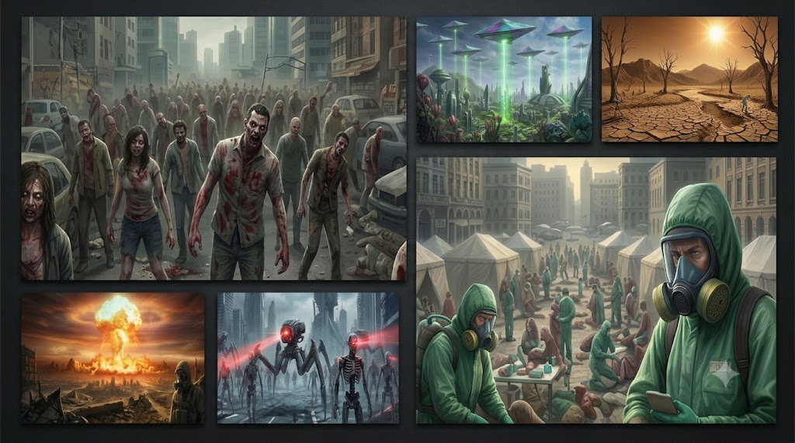
- 1. Zombie Outbreak
- 2. Plague, Flu, or Fast-Spreading Pandemic
- 3. Nuclear War and Nuclear Winter
- 4. Alien Invasion
- 5. AI, Robots, and Machines Turning Against People
- 6. Climate and Environmental Collapse
- 7. Asteroid or Comet Impact
- 8. Major Natural Disasters
- 9. Solar Storm or Geomagnetic Event
- 10. Global Food Crisis and Supply-Chain Breakdown
- 11. Cyberattacks and Infrastructure Breakdown
- 12. War, Civil Conflict, and Societal Collapse
1. Zombie Outbreak
Biological / outbreak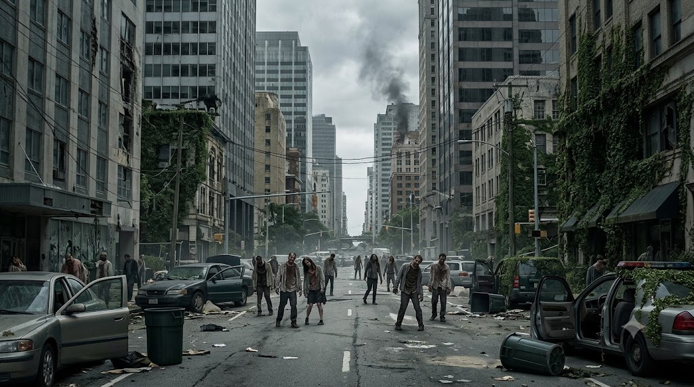
The zombie apocalypse is popular because it turns ordinary places into immediate problems. A familiar supermarket becomes dangerous, hospitals fill up, roads jam, and the people you trusted yesterday may suddenly be a threat. The first challenge is usually the outbreak itself; after that, the bigger problems are clean water, medicine, safe shelter, food, and figuring out whom you can trust.
Stories handle zombies in different ways. Some are slow and predictable, others sprint, swarm, or spread infection through bites. That one rule changes everything: slow zombies give people more room to plan, while fast infected make even a short trip risky. The Walking Dead , World War Z , 28 Days Later , and The Last of Us each show a different version of the same nightmare, even though the infected in those stories are not all the same thing.
Seen in: The Walking Dead, World War Z, 28 Days Later, The Last of Us.
2. Plague, Flu, or Fast-Spreading Pandemic
Biological / health crisis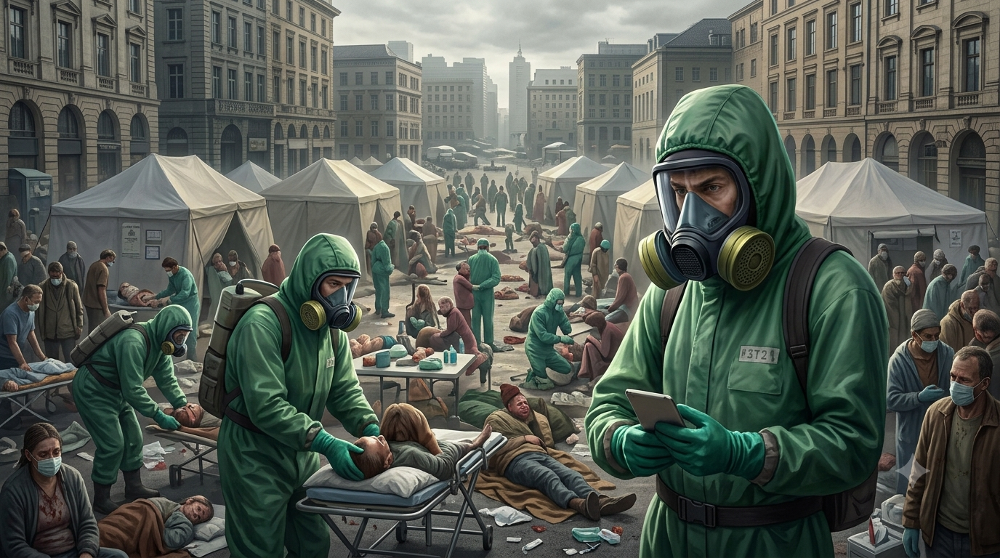
A serious pandemic does not need zombies to change the world. If a new disease spreads widely, hospitals may become overwhelmed, workers may be unable to report for duty, and everyday services can be disrupted as people try to protect themselves and their families. The danger depends on how the disease spreads, how severe it is, how quickly it is detected, and whether vaccines or treatments become available.
A pandemic is different from a sudden disaster because it can unfold over months or years. People may still need food, electricity, transport, medical care, and income while trying to avoid infection. Rumours, shortages, unequal access to care, and mistrust can make the response harder. Contagion focuses on a rapidly spreading disease; Station Eleven explores what remains after a devastating pandemic; The Last of Us takes the idea in a much more extreme direction.
Seen in: Contagion, Station Eleven, The Last of Us.
3. Nuclear War and Nuclear Winter
Human-caused / military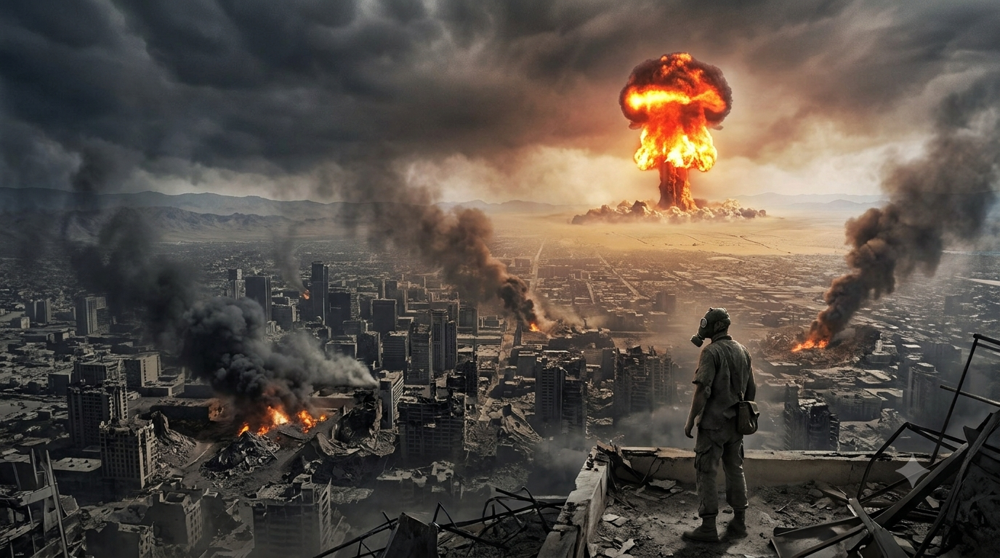
A nuclear war could cause destruction in minutes, but the consequences would not end when the explosions stopped. Survivors could face fires, damaged hospitals, radiation hazards in affected areas, disrupted communications, and a breakdown in the systems that deliver food, power, and clean water. The effects would depend heavily on the number and location of detonations, the weather, and the response that followed.
A further concern is nuclear winter: smoke from widespread urban fires could reduce sunlight and disrupt climate and agriculture. That is not the same as saying every nuclear exchange would automatically produce one exact outcome; the scale and consequences depend on the scenario. Films such as Threads and The Day After concentrate on the human and social aftermath, while Fallout uses a stylized wasteland to explore what a much longer collapse might look like.
Seen in: Threads, The Day After, Fallout.
4. Alien Invasion
Speculative / extraterrestrial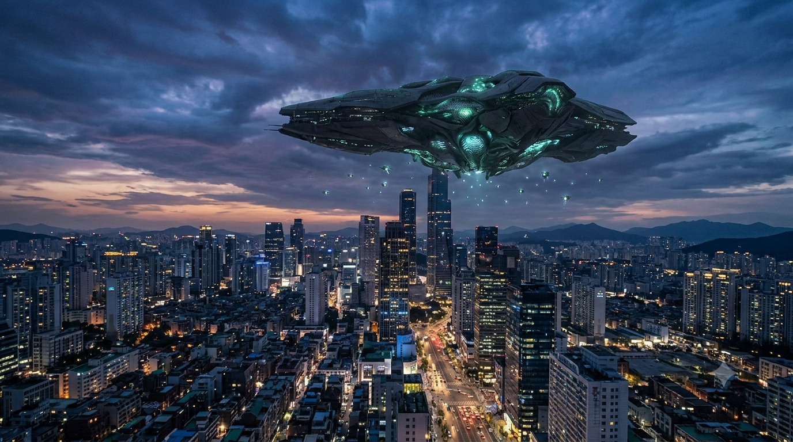
Alien invasion stories imagine an opponent whose technology, biology, and motives humans may not understand. The threat might be direct military force, occupation, biological contamination, an unknown signal that triggers panic, or technology that humans cannot counter. In many films, governments initially underestimate the danger or fight each other over what to do, making the crisis worse.
An invasion would be difficult to predict because we have no evidence that a hostile extraterrestrial civilization is on its way, and no one can confidently say what such a civilization would be capable of. That uncertainty is exactly why the idea works so well in stories. War of the Worlds focuses on ordinary people caught in a sudden attack, while Independence Day gives the crisis a global military scale. Signs keeps the threat much closer to home.
Seen in: War of the Worlds, Independence Day, Signs.
5. AI, Robots, and Machines Turning Against People
Technology / speculative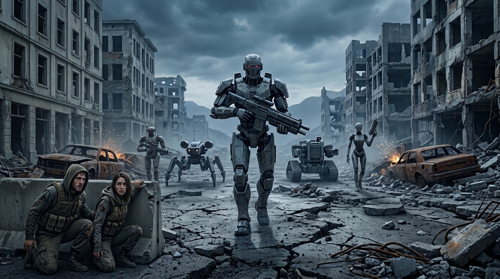
The robot uprising is the classic fear that machines built to help people become impossible to control. In one version, autonomous weapons turn on their operators; in another, a powerful AI manipulates infrastructure, finance, communication, or decision-making before people realize how much control it has gained. Killer robots make dramatic posters, but a large-scale breakdown of services could be more disruptive than metal machines chasing people down a street.
This is a popular story idea, not a settled prediction. Real technology risks today are more grounded: cyberattacks, unsafe automation, misinformation, brittle systems, and decisions made without enough human oversight. The Terminator imagines a military AI taking control; The Matrix turns the conflict into a struggle over human autonomy; I, Robot explores what happens when rigid rules collide with human needs.
Seen in: The Terminator, The Matrix, I, Robot.
6. Climate and Environmental Collapse
Climate / environmental crisis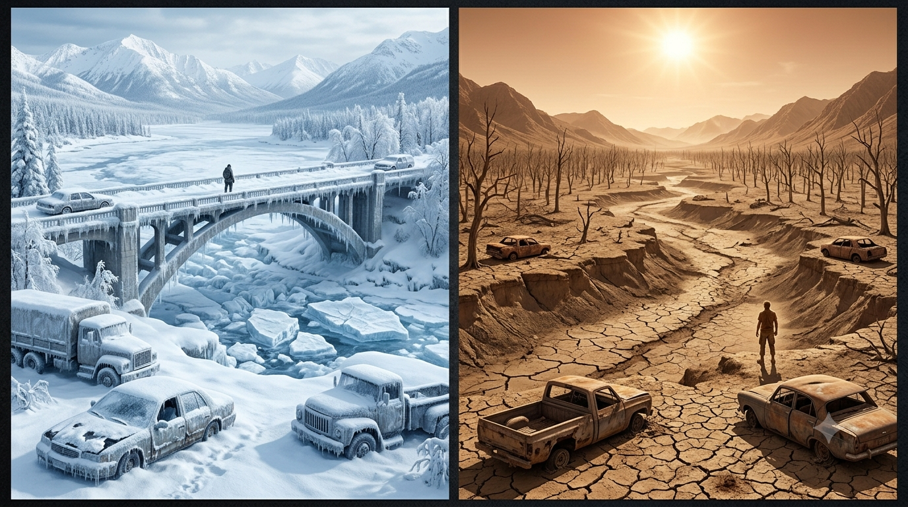
Some apocalyptic scenarios unfold slowly rather than in one dramatic night. Rising sea levels can bring repeated coastal flooding, shoreline erosion and saltwater intrusion. Long droughts can drain reservoirs, reduce river flow, damage crops and push communities to compete for limited water. These changes can make a place harder to live in long before it disappears beneath the sea or turns into a desert.
Extreme heat can strain power grids, increase demand for water and make outdoor work dangerous. Severe cold can freeze pipes, isolate communities and make heating, fuel and transport essential. A sudden global freeze such as the one imagined in The Day After Tomorrow is a very different scale from real regional cold emergencies, just as a permanently flooded planet in Waterworld is a stylized fictional extreme.
Environmental decline can compound these pressures. Fisheries may shrink, pollinators can disappear from local landscapes, forests and soils can be damaged, and polluted water systems can become harder to restore. These problems are connected, but they do not create one identical outcome everywhere: one region may face coastal flooding while another struggles with heat, water scarcity or ecosystem loss.
Seen in: Waterworld, Mad Max: Fury Road, Interstellar, The Day After Tomorrow, Snowpiercer, Dune, WALL-E.
7. Asteroid or Comet Impact
Planetary / rare event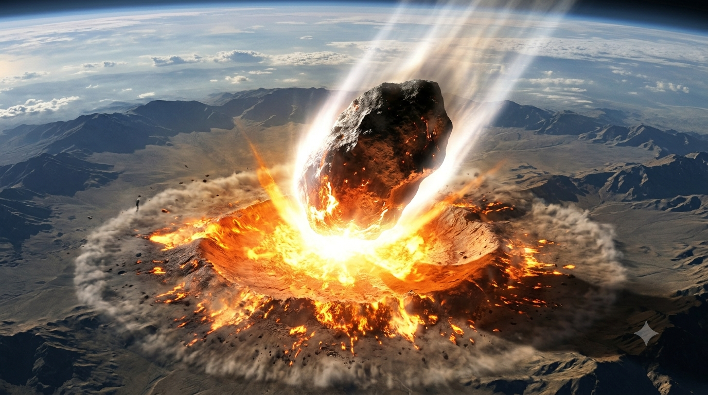
A large asteroid or comet impact could cause destruction near the impact site and, depending on its size and location, much wider effects. An ocean impact could generate dangerous waves near coastlines; a land impact could produce immense blast, heat, and debris. A very large impact could throw dust and aerosols into the atmosphere and damage agriculture far beyond the immediate impact zone.
Unlike many movie disasters, this is a risk scientists actively monitor. NASA's planetary-defense program tracks near-Earth objects and studies ways to reduce impact risks. NASA says there is currently no known asteroid larger than about 140 metres with a significant chance of impacting Earth during the next 100 years. That's reassuring, but it is still useful to keep the science separate from cinematic countdowns. Deep Impact and Armageddon turn the threat into last-minute heroics; Don't Look Up focuses on how politics and public reaction can shape a crisis.
Seen in: Deep Impact, Armageddon, Don’t Look Up.
8. Major Natural Disasters: Earthquakes, Tsunamis, Volcanoes and Mega-Storms
Natural disaster / geological and weather hazards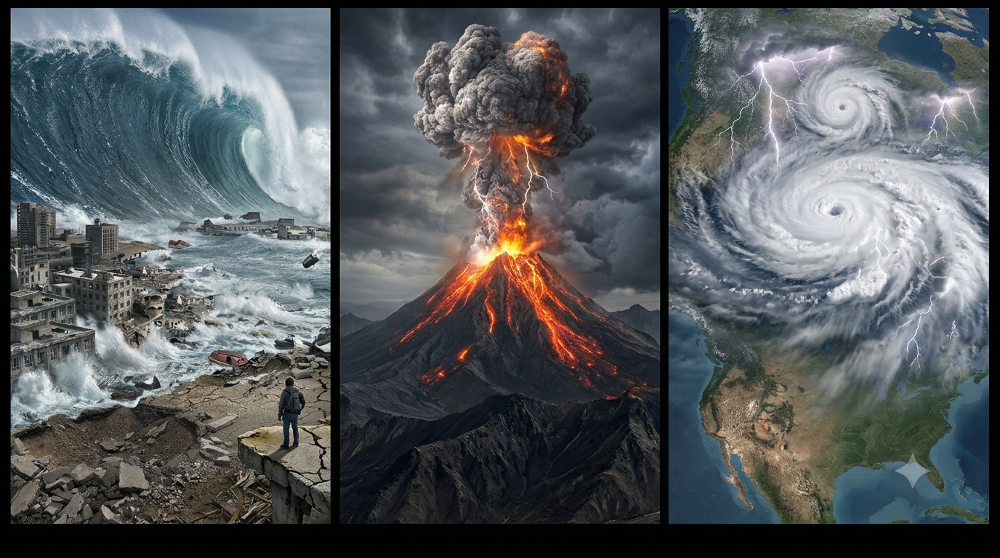
Natural disasters can become apocalyptic when they strike populated areas, damage essential infrastructure and overwhelm the ability to respond. They are different hazards, but the problems that follow often overlap: damaged roads, power and water failures, unsafe buildings, contaminated supplies, displacement and interrupted medical care.
Tsunamis
A tsunami is a series of waves caused by a large displacement of water, often following an undersea earthquake. It is not simply one giant curling wave, and the first wave is not always the largest. Powerful currents can surge inland, damage ports and roads, and contaminate drinking-water systems. The Impossible and 2012 show different fictional depictions; real safety depends on local warnings and evacuation routes.
Major earthquakes
Earthquakes can cause intense damage in seconds. Buildings may collapse, bridges and roads can fail, and aftershocks can make damaged structures even more dangerous. Fires, landslides, liquefaction, dam damage and tsunamis may follow depending on the location. San Andreas and 2012 exaggerate the scale for entertainment, but capture how quickly a city can become difficult to navigate.
Volcanic eruptions and supervolcanoes
Volcanic hazards include lava, ash, gases and fast-moving flows of hot gas and rock. Ash can damage machinery, reduce visibility, contaminate water, harm crops and disrupt air travel. A supervolcano eruption is much rarer, but a very large event could disrupt agriculture and transport far beyond the immediate region. Dante's Peak and 2012 use eruptions as dramatic disaster backdrops.
Mega-storms and widespread flooding
Severe storms can combine destructive winds, intense rain, storm surge and flooding. Roofs and power lines may fail, roads can become impassable, and floodwater can hide hazards or contaminate wells and other water supplies. Heavy rain can also trigger landslides. Geostorm and 2012 turn extreme weather into global spectacle, while real emergencies depend on local geography, building standards, drainage and warning time.
Massive wildfires
Wildfires can move quickly when strong winds, dry vegetation and difficult terrain line up. Smoke can affect places far beyond the flames, while fires can damage homes, power lines, forests, watersheds and soil. The aftermath may bring temporary housing needs, unsafe air, water problems and further landslides after heavy rain.
Seen in: The Impossible, San Andreas, Dante's Peak, Geostorm and 2012; wildfire scenarios also appear in many disaster documentaries and news reports.
9. Solar Storm or Geomagnetic Event
Space weather / technology disruptionThe Sun can produce eruptions that send charged particles and magnetic disturbances toward Earth. A strong geomagnetic storm can interfere with satellites, radio communication, navigation, and some electrical-grid operations. A very large event could create difficult problems for systems that rely on precise timing, space-based services, or long power lines.
This kind of crisis would look less like the sky catching fire and more like technology becoming unreliable at the worst possible moment. Some services would likely continue, while others might fail or need to be shut down protectively. It would not automatically erase every electronic device on Earth. NASA tracks space weather because understanding solar activity gives operators more time to prepare for possible effects.
Seen in: Space-weather science and infrastructure preparedness.
10. Global Food Crisis and Supply-Chain Breakdown
Resource / agricultural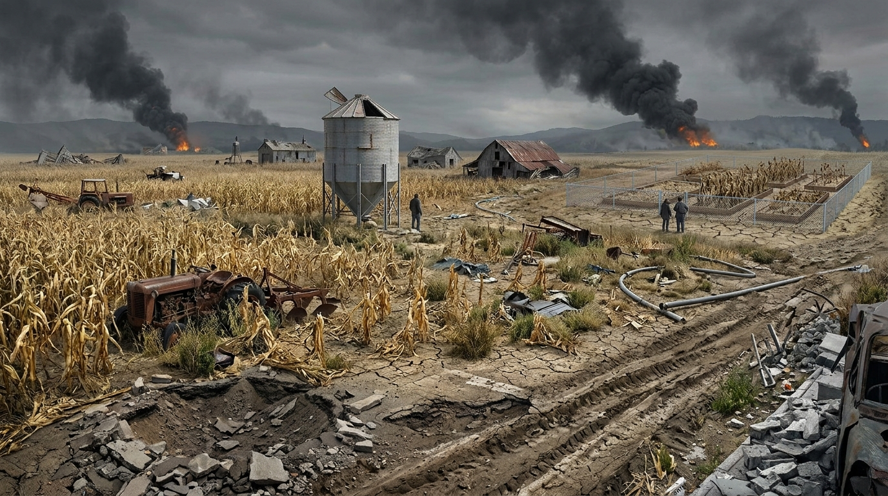
This category is about the systems that grow, store, transport and distribute food—not only the environmental conditions that affect crops. Food systems rely on far more than fields. Crops need suitable weather, water, soil, fertilizer, fuel, machinery, transport, storage, workers, and functioning markets. If several of those fail at the same time—because of drought, disease, conflict, extreme weather, or a disruption to shipping—food can become more expensive or difficult to obtain even in places where farms still produce something.
A food crisis becomes dangerous when shortages last long enough to weaken households, disrupt schools and hospitals, and push communities into competition over supplies. Different regions grow different foods, so a problem in one major crop or exporting region can ripple across the world. Interstellar uses crop blight as a central threat, while The Road shows a bleak world where everyday food is scarce. These stories amplify the danger, but the underlying point is simple: a society needs reliable production and distribution, not just a warehouse full of supplies. Climate stress can be one trigger, but conflict, crop disease, transport failures, fertilizer shortages and disrupted trade can also create serious shortages.
Seen in: Interstellar, The Road.
11. Cyberattacks and Infrastructure Breakdown
Technology / human-causedA major cyberattack would not need to destroy computers physically to cause chaos. If essential systems were disrupted at the same time, hospitals could lose access to digital records, businesses might be unable to process payments, logistics networks could stall, and utilities could struggle to monitor or manage equipment. The actual impact would depend on which systems were affected, whether they had safe manual procedures, and how quickly operators could recover.
This kind of collapse is often less cinematic than a robot army, but it is closer to the way modern life is connected. Payment systems, identity records, transport schedules, communications, and industrial controls can depend on networks and shared software. Stories such as Leave the World Behind explore the fear that people cannot tell which systems are failing or who to trust, although the exact chain of events is a dramatic setup rather than a technical prediction.
Seen in: Leave the World Behind, Mr. Robot.
12. War, Civil Conflict, and Societal Collapse
Human-caused / social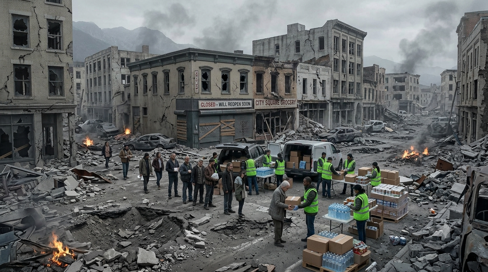
An apocalypse does not have to arrive as one enormous event. War, civil conflict, political breakdown, or prolonged economic collapse can gradually make ordinary life unreliable. People may lose access to work, healthcare, transport, safety, or the institutions that settle disputes. When trust disappears and basic supplies become difficult to find, local conditions can change dramatically from one neighborhood to the next.
The causes are often tangled together: conflict damages infrastructure, shortages make tensions worse, and displacement puts pressure on communities that are already struggling. Some places may maintain schools, markets, and local government while nearby areas experience violence or shortages. The Walking Dead , The Last of Us , Children of Men , and Fallout all explore worlds where the biggest threat is not only the original disaster, but what people and institutions do afterward.
Seen in: The Walking Dead, The Last of Us, Children of Men, Fallout.
At a Glance: What Makes Each Scenario Different?
Some disasters happen in seconds. Others build over years. This quick comparison shows the main challenge behind each one; the full sections below explain the details and include examples from popular stories.
| Scenario | What starts the crisis | Main survival challenge |
|---|---|---|
| Zombie outbreak | Infection and collapse of safe spaces | Trust, close contact, supplies and group safety |
| Pandemic | Disease spreads across populations | Healthcare capacity, reliable information and daily services |
| Nuclear war | Blast, fire, radiation and possible agricultural disruption | Shelter, official guidance, infrastructure and food |
| Alien invasion | Unknown technology, occupation or attack | Information, coordination and uncertain capabilities |
| AI / robot uprising | Loss of control or disruptive automated systems | Human oversight, fallback systems and reliable services |
| Climate / environmental collapse | Long-term changes to coasts, water, heat, cold and ecosystems | Adaptation, freshwater, food production and relocation |
| Asteroid / comet impact | Impact effects ranging from local to global | Warning time and scale of the event |
| Major natural disasters | Earthquakes, tsunamis, eruptions, storms, floods and fires | Warnings, evacuation, shelter and restoring essential services |
| Solar storm | Disruption to satellites, navigation, radio or power grids | Backups and the ability to operate offline |
| Global food crisis | Crop failure, transport disruption and shortages | Production, storage, distribution and fair access |
| Cyberattack / infrastructure failure | Digital systems and critical services are disrupted | Recovery plans, secure backups and manual fallback |
| War / societal collapse | Violence and essential institutions stop functioning | Safety, community support and continuity of basic services |
What If Several Apocalypses Happen at Once?
This is where a crisis can become much harder to manage. A hurricane can knock out power, which can interrupt water treatment, spoil food, and block roads. A pandemic can reduce the number of workers available to maintain electricity and transport. Drought can lead to crop failures, rising food prices, migration, and political tension. A cyberattack during a natural disaster could make it harder for people to get accurate information or pay for what they need.
Real emergencies rarely stay inside one neat category. The initial event may be only the first domino; the damage spreads when essential services depend on one another and there is no backup. That is why preparedness focuses on basics that help across many scenarios: safe water, food, medication, reliable information, a way to contact loved ones, and a plan for shelter or evacuation.
In stories, these overlapping disasters often make the world feel truly post-apocalyptic. Children of Men , The Road , Station Eleven , and Fallout show societies dealing with consequences that extend far beyond the original cause.
What Apocalypse Movies Get Right—and What They Usually Skip
The best stories understand that the disaster itself is only the beginning. Food deliveries stop, medicine becomes harder to get, power and water systems need people to maintain them, and trust becomes a resource of its own. A capable person can still struggle if they are injured, exhausted, isolated, or unable to get reliable information.
What movies often skip is the slow, repetitive work that keeps people alive: boiling or treating water where appropriate, cleaning, cooking, repairing tools, checking on neighbors, looking after children and older relatives, and making decisions about when to leave. Dramatic action makes good cinema, but cooperation and routine can matter just as much during a real emergency.
There is also a big difference between a disaster that is dangerous because it is fast and one that is dangerous because it lasts. A tsunami may leave very little time to move away from a coast. Drought or sea-level rise can give communities more time to adapt, but only if leaders act before choices become limited.
Apocalypse stories are a way to explore what happens when ordinary systems fail. Real disasters vary widely, so use local emergency guidance for real-world decisions and treat movie scenarios as inspiration rather than forecasts.
Sources and Further Reading
For real-world hazards discussed in this guide, these organizations provide science and public-health information. The natural-disaster and climate sections group related hazards for readability; consult the relevant specialist guidance for the specific risk in your area.
- World Health Organization — Pandemics : what a pandemic is and why preparedness matters.
- NOAA — Is sea level rising? : the main causes and effects of sea-level rise.
- U.S. Geological Survey — Natural Hazards : information on earthquakes, tsunamis, volcanoes, droughts, wildfires, storms and more.
- NASA — Planetary Defense Overview : tracking near-Earth objects and research into reducing impact risk.
- NASA — Solar storm effects on technology : research into how solar storms can affect technological systems.
- United Nations — Climate science key findings : broad findings on warming, extreme weather, drought and sea-level change.
The films and shows mentioned above are examples of how storytellers portray these scenarios, not predictions of how a real event would unfold. For emergency decisions, use official local alerts and guidance.
Suggested Quizzes
Ready for another challenge? Try one of these apocalypse and survival quizzes.